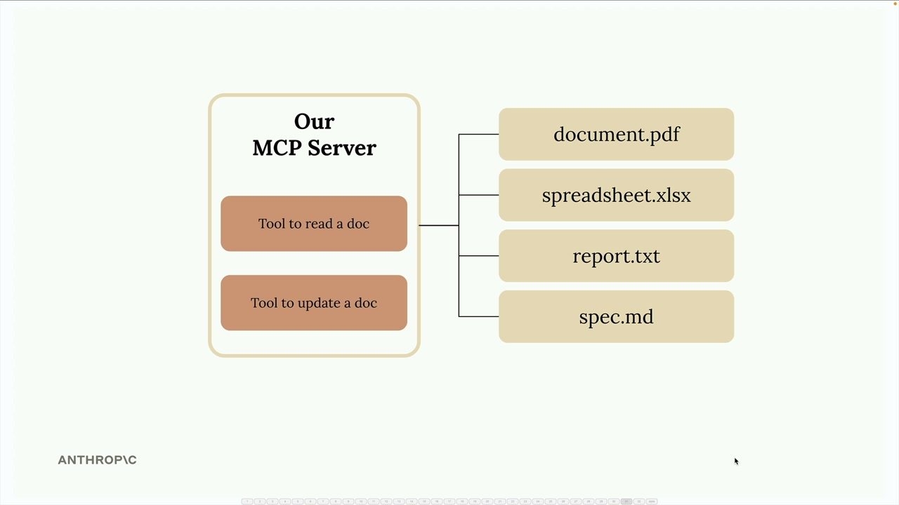

Инструменты в MCP
Чему научитесь
Видео 7:03 и текст урока
К концу урока вы сможете:
- создать MCP-сервер одной строкой через Python SDK;
- описывать инструменты декоратором
@mcp.toolиField; - обрабатывать ошибки в инструментах сервера.
Видео и текст урока.
Смотреть урок на Skilljar Defining tools with MCP · 7:03Создавать MCP-сервер гораздо проще с официальным Python SDK. Вместо того чтобы вручную писать сложные JSON-схемы инструментов, SDK берёт эту сложность на себя с помощью декораторов и аннотаций типов.
В этом примере мы создаём MCP-сервер, который управляет документами в памяти. Сервер даст два основных инструмента: один читает содержимое документа, другой обновляет его через поиск и замену.
Создаём MCP-сервер
С Python MCP SDK создать сервер невероятно просто. Полноценный MCP-сервер инициализируется одной строкой:
from mcp.server.fastmcp import FastMCP
mcp = FastMCP("DocumentMCP", log_level="ERROR")
В этой реализации документы хранятся в простом словаре Python: ключи — ID документов, значения — их содержимое:
docs = {
"deposition.md": "This deposition covers the testimony of Angela Smith, P.E.",
"report.pdf": "The report details the state of a 20m condenser tower.",
"financials.docx": "These financials outline the project's budget and expenditure",
"outlook.pdf": "This document presents the projected future performance of the",
"plan.md": "The plan outlines the steps for the project's implementation.",
"spec.txt": "These specifications define the technical requirements for the equipment"
}
Инструменты через декораторы

SDK превращает создание инструментов из многословного процесса в чистый и читаемый код. Вместо длинных JSON-схем — декораторы и аннотации типов Python.
Инструмент чтения документа
Первый инструмент позволяет Claude прочитать любой документ по ID. Полная реализация:
@mcp.tool(
name="read_doc_contents",
description="Read the contents of a document and return it as a string."
)
def read_document(
doc_id: str = Field(description="Id of the document to read")
):
if doc_id not in docs:
raise ValueError(f"Doc with id {doc_id} not found")
return docs[doc_id]
Декоратор @mcp.tool автоматически генерирует JSON-схему, нужную Claude. Класс Field из Pydantic задаёт описания параметров, которые помогают Claude понять, что ожидает каждый аргумент.
Инструмент правки документа
Второй инструмент делает простой поиск и замену в документе:
@mcp.tool(
name="edit_document",
description="Edit a document by replacing a string in the documents content with a new string."
)
def edit_document(
doc_id: str = Field(description="Id of the document that will be edited"),
old_str: str = Field(description="The text to replace. Must match exactly, including whitespace."),
new_str: str = Field(description="The new text to insert in place of the old text.")
):
if doc_id not in docs:
raise ValueError(f"Doc with id {doc_id} not found")
docs[doc_id] = docs[doc_id].replace(old_str, new_str)
Инструмент принимает три параметра: ID документа, искомый текст и текст замены. Для простоты используется встроенный метод строк replace().
Обработка ошибок
В обоих инструментах есть базовая обработка ошибок на случай, если Claude запросит несуществующий документ. При неверном ID инструменты выбрасывают ValueError с понятным сообщением, которое Claude может понять и, возможно, учесть.
Преимущества подхода с SDK
- автоматическая генерация JSON-схемы из аннотаций типов Python;
- чистый, читаемый и удобный в поддержке код;
- встроенная проверка параметров через Pydantic;
- меньше шаблонного кода, чем при ручном написании схем;
- типобезопасность и поддержка в IDE.
Python MCP SDK превращает сложное написание описаний инструментов в привычную для Python-разработчика работу. Вы сосредоточены на бизнес-логике, а SDK берёт на себя детали протокола.
Дальше
Следующий урок — MCP Inspector: как проверить сервер в браузере без всего приложения.
Оригинал урока: Defining tools with MCP.